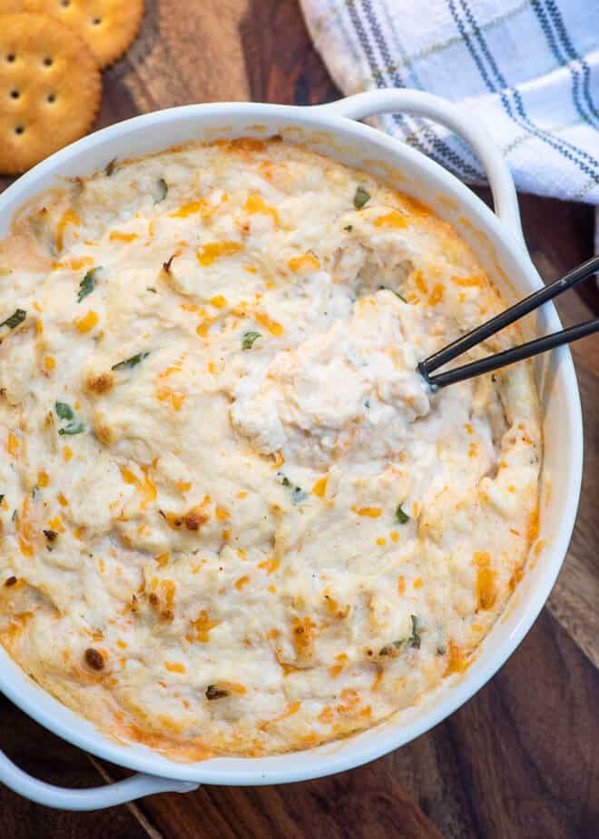

Hot Crab Dip

This steamy hot crab dip is sure to satisfy you and your guests!
Perfect for parties or just an indulgent movie night, this recipe is delicious and super easy to make.
Ingredients
- 8 ounce package of cream cheese
- 1/2 mayonnaise
- 1/2 sour cream or plain greek yogurt
- 1 cup shredded sharp cheddar cheese
- 1 tablespoon grated white onion
- 2 (6 ounce) cans lump crab meat
- 1 teaspoon all purpose seasoning
- 1/2 teaspoon Worcestershire
- 1/2 lemon, juiced
- 2 tablespoons finely chopped Italian parsley
- a few shakes of Tobasco, to taste
- fresh ground black pepper, to taste
- crackers or chips for serving
Directions
- Preheat oven to 350 degrees F
- Place cream cheese, mayonnaise, and sour cream in a medium mixing bowl and stir until creamy.
Add remaining ingredients and stir again until well combined. Transfer to a small baking dish
and transfer to oven.
- Bake for 25 to 30 minutes until browned and bubbly.
- Serve with crackers or chips.